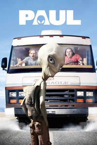

| My Movies | |
| Paul
For the past 60 years, a wisecracking alien named Paul (Seth Rogen) has resided at a top-secret military base in America's UFO heartland. When Paul decides he has had enough of Earth, he escapes from the compound and hops on the first handy vehicle -- a rented RV manned by two British sci-fi nerds named Graeme (Simon Pegg) and Clive (Nick Frost). With federal agents and the father of an accidental kidnap victim on their tail, the two hatch a crazy plan to help Paul return to his spaceship.  |
|
| All Content By James Garner | |